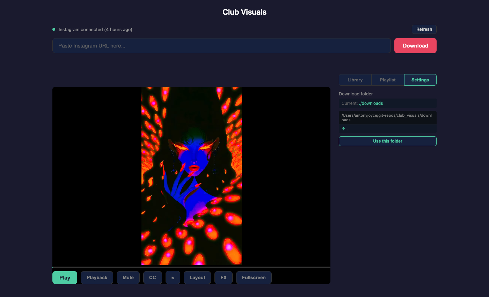

Technical reference for Club Visuals: file structure, server API, configuration, settings, and view mode details.
File structure
club_visuals/
├── server.py # Python HTTP server (stdlib only)
├── index.html # Main frontend (single file)
├── output.html # Output window for OBS/secondary display
├── effects.html # FX Controller popup
├── ig-save.sh # CLI download script
├── start.sh # Start server + open browser
├── stop.sh # Stop server
├── config.json # App configuration
├── .cookies.txt # Exported browser cookies (auto-managed)
├── downloads/ # Saved videos (.mp4) and metadata (.info.json)
├── thumbnails/ # Cached video thumbnails (.jpg)
├── playlists/ # Saved playlists (.json)
└── docs/
├── screenshots/ # Docshots output
└── user-guide/ # This guide
Configuration
The config.json file stores app settings. Currently there is one key:
Key
Type
Default
Description
download_dir
string
./downloads
Path where videos are saved. Relative paths resolve from the project root.
Settings tab

Figure 11. The Settings tab with the download folder directory browser (10-settings-tab.png).
The Settings tab in the right sidebar provides a visual directory browser for changing the download folder. Navigate to a directory and click Use this folder to save the selection. Hidden files and directories (starting with .) are filtered out.
API endpoints
The server exposes a JSON API on http://localhost:8008. All endpoints are local-only.
Pages
Method
Path
Description
GET
/
Main application
GET
/output
Output window
GET
/effects
FX Controller
Videos
Method
Path
Description
GET
/api/videos
List all videos with size, date, and uploader
GET
/api/metadata/{filename}
Get video metadata (channel, description, upload date, duration)
GET
/video/{filename}
Serve video file
GET
/thumbnail/{filename}
Serve or generate thumbnail
DELETE
/api/video/{filename}
Delete video, metadata, and thumbnail
Downloads
Method
Path
Description
POST
/download
Download Instagram video (SSE progress stream)
POST
/api/convert
Convert WebM recording to MP4
Connection
Method
Path
Description
GET
/api/cookie-status
Returns {exists, age_hours, fresh}
POST
/api/refresh-cookies
Export cookies from browser. Accepts optional {password}
Playlists
Method
Path
Description
GET
/api/playlists
List all saved playlists
GET
/api/playlist/{slug}
Get a playlist by slug
POST
/api/playlist/{slug}
Save a playlist
DELETE
/api/playlist/{slug}
Delete a playlist
Configuration and state
Method
Path
Description
GET
/api/config
Get app configuration
POST
/api/config
Update app configuration
GET
/api/state-stream
SSE stream for output window synchronisation
POST
/api/state
Broadcast state to all SSE clients
GET
/api/browse?path=
Browse directories for settings
View modes detail
Mode
Tiles
CSS layout
Preset count
Object fit
Single
1
Flex row, 100% width
None
contain
Dual
2
Flex row, 50% each
8
cover
3x
3
Flex row, 33.3% each
8
cover
4x
4
2×2 CSS grid
16
cover
8x
8
4×2 CSS grid
12 (+ slider for 32)
cover
Mirror preset system
The 32 mirror configurations are generated from a combination of 8 horizontal flip rules and 4 vertical flip rules. Each tile in a multi-tile layout can be independently flipped horizontally, vertically, both, or neither. The curated presets per view mode are subsets chosen for visual impact.
SSE state commands
The output window receives these commands via the /api/state-stream SSE connection:
Command
Payload
Effect
loadVideo
filename
Loads and auto-plays the video
play
—
Resumes playback
pause
—
Pauses playback
setView
mode number
Changes layout mode
setConfig
preset value
Changes mirror preset
setCaption
text, visible
Shows or hides caption text
setEffects
effects object
Applies CSS filter effects
setZoom
zoom level
Updates tile zoom
setPan
panX, panY
Updates tile pan offset
setTrails
enabled, amount
Enables/disables trails
Playlist JSON format
Playlists are saved as JSON files in the playlists/ directory:
The .cookies.txt file is a Netscape-format cookie jar exported by yt-dlp from your browser. It is cached for 7 days before expiring. The cookie status API endpoint reports:
exists — whether the file exists
age_hours — how many hours since the last export
fresh — whether the cookies are within the 7-day validity window